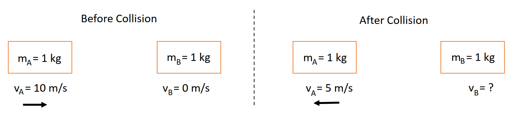
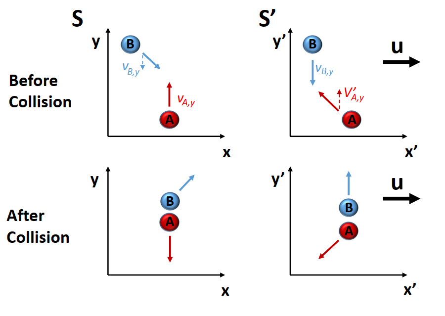

Physics and Astronomy, University of Kent
In this lecture we will discuss further implications of special relativity on momentum. Since momentum is dependent on velocity, it’s not surprising that our non-relativistic definition will need to be modified.
In Newtonian mechanics, momentum is defined as:
\[p = mv\]
At first glance, there is no obvious reason why the thing that we call momentum should be defined in this way. Why not define momentum to be \(p = m/v\) or \(p=mv^8\)? The reason that momentum is defined as \(mv\) is because this value is conserved. More generally, the total value of the momentum, summed over all objects, is conserved for any system that has no external forces acting on it.
To take a simple example, consider two blocks, each with a mass of \(1\,\rm kg\). One is stationary, and the other is moving towards it at a velocity of \(10\,\rm m/s\), as shown in the diagram in Figure 1.

The total momentum of the system before the two blocks collide is given by:
\[\begin{aligned} p &= m_1v_1 + m_2v_2 \\ &= (1~\mathrm{kg})(10~\mathrm{ms^{-1}}) + (1 ~\mathrm{kg})(0) \\ &= 10 \; ~\mathrm{kgms^{-1}} \end{aligned}\]
After the collision, the total momentum will still be equal to \(10 \, \rm kgm/s\). So if, for example, the left-most block bounces back at \(5 \, \rm m/s\), the second block must have a velocity \(v_2\) such that:
\[\begin{aligned} p &= 10~\mathrm{kgms^{-1}} = (1~\mathrm{kg})(-5~\mathrm{ms^{-1}}) + (1~\mathrm{kg})v_2 \\ v_2 &= 15 \; \mathrm{ms^{-1}} \end{aligned}\]
Using the Galilean transformation between inertial frames, if momentum is conserved in one frame of reference then it will also be conserved in another. This doesn’t mean that we calculate the same value of momentum for different reference frames. If an object is moving at \(2 \, \rm m/s\) in frame \(S\) and \(4 \, \rm m/s\) in \(S'\), then since \(p=mv\), the value for momentum will be different in \(S\) and \(S'\). But within \(S\), a certain value of momentum, \(p\), will be conserved (i.e. not change), and within \(S'\) a different value of \(p\) will be conserved.
Given that momentum conservation is such as well-established principle, we might hope that it continues to be conserved after we make relativistic transformations between reference frames. Unfortunately, in the way we have defined momentum, after we make velocity transformations between reference frames, momentum conservation will no longer be true for at least one of the frames. Below, we will show that this is the case, and then make a new definition of momentum, that reduces to the classical definition for \(u << c\), but which is also correctly conserved in relativistic frames.
To see that momentum as defined classically is not conserved in relativistic situations, consider the situation shown in Figure 2. There are two balls, ball A and ball B which are going to collide. We will consider two reference frames, \(S\) and \(S'\). \(S'\) is moving with respect to \(S\) with a velocity \(u\) along the x-axis.
In reference frame \(S\), A is moving directly up the y-axis with velocity \(v_{A,y}\). In reference frame \(S'\), B moving directly down the y-axis (i.e. it has zero x-velocity) with velocity \(v_{B,y} = -v_{A,y}\).

Let’s consider what happens in reference frame \(S\). We know the y-velocity of A, but we don’t know the y-velocity of B in this frame, only in \(S'\). In classical mechanics, \(v_y = v_y'\), and so ball B simply has the opposite velocity and momentum to ball A. After a totally elastic collision, they would each then have the opposite velocity and momentum in the y direction.
In the relativistic case, however, we must use the relativistic velocity transform \[v_y = \frac{v_y'}{\gamma(1+uv_x'/c^2)}.\] Ball B has no x-velocity in \(S'\), so \(v_x' = 0\), and so we simply have: \[v_y = \frac{v_y'}{\gamma}\] Or, to put it another way, the y-velocity of B is smaller than that for A, and so the total momentum in the y-direction is not zero (it is positive because A, which is moving in the +y direction has more positive momentum than has B has negative momentum). But after the collision, the y-components of the velocity are reversed. Now there is more momentum in the -y direction, and so momentum is not conserved. Therefore, the classic definition of momentum is only approximately conserved for \(u << c\). We need to work out a relativistic correction to momentum to recover its more general conservation.
The relativistic momentum of an object, measured in a reference frame in which the object is moving at velocity \(v\), is given by:
\[p = \gamma m_0 v\]
Gamma is defined almost the same as before: \[\gamma = \sqrt{\frac{1}{1 - v^2/c^2}}\] except that we are using \(v\) rather than the velocity of the reference frame, \(u\).
We have also introduced a new concept, the rest mass, \(m_0\).
The rest mass of an object is its mass measured in its rest frame (the frame of reference in which it is not moving).
This implies that mass of an object is effectively different in different reference frames. We could think about defining this relativistic mass as something like \(m = \gamma m_0\), but we tend not to write it this way unless we are writing the full equation for relativistic momentum. As ever, for low velocities, we have \(\gamma \approx 1\) and so we recover the non-relativistic equation for momentum.
We can motivate \(p=\gamma m_0 v\) in the following way. Since \(v=dx/dt\) we can write
\[p = m_0v = m_0\frac{dx}{dt}\]
When we change reference frame, then now \(dt' \neq dt\). However, the proper time, \(d\tau\), (the time measured in the object’s reference frame) doesn’t change with the reference frame. So, let’s define:
\[p = m_0 \frac{dx}{d\tau}.\]
This is fine because in the rest frame of the object (\(\gamma = 1\)), we have \(dt=d\tau\) by definition, so this is in agreement with non-relativistic physics in the limit \(v \ll c\). More generally, for any reference frame, \(dt = \gamma d\tau\), so we straight-away see that
\[p = m_0 \gamma \frac{d x}{d t} = \gamma m_0 v.\]
This isn’t a true derivation of course, since we chose \(p=m_0(dx/d\tau)\) without any real justification, but it shows that this is a plausible definition for relativistic momentum